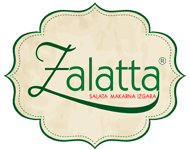

Güne kahvaltısız başlandığında; Yorgun, stresli ve kontrasyon bozukluklarının yaşandığı keyifsiz bir gün davet edilir. Kahvaltı yapılmadığında, saat 10-12 arasında vücuttaki enerjide büyük bir azalma olur. Buda kas kasılması, kontrolden yoksun bir sinir sistemi, baş dönmesi, açlık duygusu ve uyuşukluğa neden olur.


© 2014 Zalatta A.Ş.